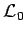

Inhalt Index DeskTop Bronstein

 Lineare Integralgleichungen Singuläre Integralgleichungen Singuläre Integralgleichungen mit Cauchy-Kernen
Lineare Integralgleichungen Singuläre Integralgleichungen Singuläre Integralgleichungen mit Cauchy-Kernen


Gegeben ist die Integralgleichung
Hier ist  ein System endlich vieler glatter, doppelpunktfreier, geschlossener Kurven in der komplexen Ebene, die ein zusammenhängendes Innengebiet S+ mit und ein Außengebiet S- bilden. Dabei liegt S+ beim Durchlauf zur Linken von . Für die Betrachtung von Kurvensystemen, bestehend aus stückweise glatten, offenen oder geschlossenen Kurven (s. Lit. 11.2). Eine Funktion u(x) ist auf
ein System endlich vieler glatter, doppelpunktfreier, geschlossener Kurven in der komplexen Ebene, die ein zusammenhängendes Innengebiet S+ mit und ein Außengebiet S- bilden. Dabei liegt S+ beim Durchlauf zur Linken von . Für die Betrachtung von Kurvensystemen, bestehend aus stückweise glatten, offenen oder geschlossenen Kurven (s. Lit. 11.2). Eine Funktion u(x) ist auf  HÖLDER-stetig, falls für beliebige Paare gilt:
HÖLDER-stetig, falls für beliebige Paare gilt:
Die Funktionen und  werden als HÖLDER-stetig mit dem Exponenten
werden als HÖLDER-stetig mit dem Exponenten  und K(x,y) bezüglich beider Argumente HÖLDER-stetig mit dem Exponenten angenommen. Der Kern K(x,y)(y-x)-1 hat für x=y eine starke Singularität. Das Integral existiert aber als CAUCHYscher Hauptwert. Mit K(x,x)=b(x) und k(x,y)=(K(x,y)-K(x,x))/(y-x) ergibt sich (11.85) in der Form
und K(x,y) bezüglich beider Argumente HÖLDER-stetig mit dem Exponenten angenommen. Der Kern K(x,y)(y-x)-1 hat für x=y eine starke Singularität. Das Integral existiert aber als CAUCHYscher Hauptwert. Mit K(x,x)=b(x) und k(x,y)=(K(x,y)-K(x,x))/(y-x) ergibt sich (11.85) in der Form
Der Ausdruck beschreibt in verkürzter Form die linke Seite der Integralgleichung.  ist ein singulärer Operator. Die Kernfunktion k(x,y) ist nur schwach singulär. Es gelte zusätzlich die Normalitätsbedingung . Die Gleichung
ist ein singulärer Operator. Die Kernfunktion k(x,y) ist nur schwach singulär. Es gelte zusätzlich die Normalitätsbedingung . Die Gleichung
ist die zu (11.87a) zugeordnete charakteristische Gleichung. Der Operator  ist der charakteristische Teil des Operators . Die zu (11.87a) transponierte Integralgleichung lautet: